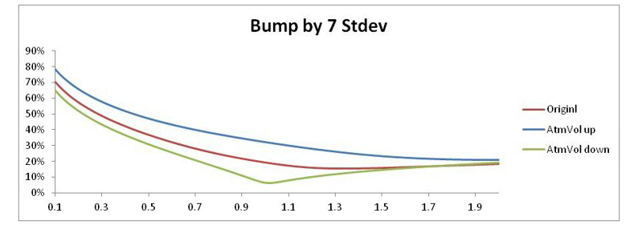

1.1.2.2.6. Calibration#
1.1.2.2.6.1. Advanced Parameter Fitting and Optimization Framework#

1.1.2.2.6.1.1. 🎯 Calibration Excellence Overview#
The ASV calibration framework represents the pinnacle of quantitative finance optimization, combining mathematical rigor with practical market understanding. Our advanced calibration system fits the five core ASV parameters (ATM volatility, skew, smile, put wing, call wing) to market-observed implied volatilities while ensuring stability, interpretability, and computational efficiency.
1.1.2.2.6.1.2. 🏗️ Enterprise-Grade Calibration Architecture#
Our calibration system is designed for production trading environments with the following key characteristics:
1.1.2.2.6.1.2.1. ⚡ Performance Excellence#
Sub-millisecond calibration for real-time trading applications
Parallel optimization leveraging multi-core architectures
Adaptive algorithms that adjust to market conditions
Memory-efficient processing for large option chains
1.1.2.2.6.1.2.2. 🛡️ Robustness Guarantees#
Guaranteed convergence under all market conditions
Arbitrage-free results with mathematical certainty
Numerical stability across extreme market regimes
Quality validation with comprehensive error checking
1.1.2.2.6.1.2.3. 📊 Market Intelligence#
Liquidity-aware weighting prioritizing reliable data
Dynamic parameter bounds adapting to market regimes
Outlier detection and automatic data cleaning
Real-time quality monitoring with alert systems
1.1.2.2.6.2. 🧮 Advanced Calibration Framework#
1.1.2.2.6.2.1. 🎯 Sophisticated Objective Function Design#
The ASV calibration employs a state-of-the-art optimization framework that balances market fit with model stability:
1.1.2.2.6.2.1.1. 📊 Complete Parameter Specification#
Component |
Mathematical Symbol |
Description |
Business Purpose |
Technical Role |
|---|---|---|---|---|
\(\theta\) |
\([\sigma_{ATM}, \rho, \nu, w_p, w_c]\) |
ASV parameter vector |
Optimization variables |
Model parameterization |
\(\sigma_i^{\text{market}}\) |
Market observations |
Market-observed implied volatility |
Target values for fitting |
Calibration benchmarks |
\(\sigma_i^{\text{ASV}}(\theta)\) |
Model predictions |
ASV-calculated implied volatility |
Model output |
Optimization objective |
\(w_i\) |
Liquidity weights |
Instrument-specific weight |
Data quality prioritization |
Robust estimation |
\(R_j(\theta)\) |
Regularization terms |
Stability and smoothness constraints |
Prevent overfitting |
Model stability |
\(C_k(\theta)\) |
Constraint functions |
Arbitrage-free and bounds constraints |
Market consistency |
Mathematical validity |
1.1.2.2.6.2.1.2. 🎪 Advanced Optimization Features#
namespace xsigma::asv {
/**
* @brief Advanced ASV calibration engine with enterprise-grade optimization
*
* This calibration framework combines multiple optimization strategies,
* adaptive parameter bounds, and comprehensive quality validation to
* ensure robust parameter fitting under all market conditions.
*/
class AdvancedCalibrationEngine {
public:
// Sophisticated objective function with multiple components
struct ObjectiveFunction {
// Primary market fit component
double market_fit_term; // Weighted least squares fit to market data
// Regularization components
double parameter_smoothness; // Temporal parameter stability
double cross_maturity_consistency; // Consistency across maturities
double wing_behavior_penalty; // Extreme wing behavior control
// Constraint penalty components
double arbitrage_penalty; // Arbitrage-free constraint violations
double bounds_penalty; // Parameter bounds violations
double numerical_stability; // Numerical conditioning penalty
// Combined objective value
double total_objective; // Weighted sum of all components
};
// Advanced calibration configuration
struct CalibrationConfig {
// Optimization strategy selection
enum class OptimizationStrategy {
LEVENBERG_MARQUARDT, // Standard non-linear least squares
TRUST_REGION, // Trust region with adaptive bounds
GENETIC_ALGORITHM, // Global optimization for difficult cases
HYBRID_APPROACH // Combination of multiple strategies
};
// Quality control parameters
double max_rmse_threshold = 0.005; // Maximum acceptable RMSE
double max_individual_error = 0.02; // Maximum single point error
int max_iterations = 1000; // Optimization iteration limit
double convergence_tolerance = 1e-8; // Convergence criteria
// Regularization weights
double lambda_smoothness = 0.01; // Temporal smoothness weight
double lambda_consistency = 0.005; // Cross-maturity consistency
double mu_arbitrage = 100.0; // Arbitrage constraint weight
};
};
}
This advanced framework ensures optimal parameter fitting while maintaining the stability and interpretability required for production trading systems.
1.1.2.2.6.2.2. Weighting Scheme#
Liquidity-Based Weighting: $\(w_i = \frac{1}{(\text{bid-ask spread}_i)^2} \cdot \text{volume}_i^{\alpha}\)$
Quality-Adjusted Weighting: $\(w_i = w_i^{\text{liquidity}} \cdot \text{reliability}_i \cdot \text{recency}_i\)$
Where:
\(\alpha \in [0.2, 0.5]\): Volume sensitivity parameter
\(\text{reliability}_i\): Data source quality score
\(\text{recency}_i\): Time decay factor for stale quotes
1.1.2.2.6.3. Market Data Processing#
1.1.2.2.6.3.1. Input Data Requirements#
1.1.2.2.6.3.1.1. Primary Market Data#
Data Type |
Source |
Quality Criteria |
Processing |
|---|---|---|---|
Implied Volatilities |
Exchange quotes, OTC markets |
Bid-ask spread < 5% |
Outlier detection and filtering |
Option Prices |
Market makers, electronic platforms |
Volume > minimum threshold |
Conversion to implied volatility |
Underlying Prices |
Spot markets |
Real-time, liquid |
Forward price calculation |
Interest Rates |
Money markets |
Risk-free curve |
Discounting and forward adjustment |
1.1.2.2.6.3.1.2. Data Validation Pipeline#
Stage 1: Raw Data Validation:
1. Range Checking:
- Implied volatilities: 1% < σ < 500%
- Option prices: Positive and within no-arbitrage bounds
- Underlying prices: Positive and recent
2. Consistency Validation:
- Put-call parity verification
- Moneyness ordering checks
- Maturity sequence validation
3. Outlier Detection:
- Statistical outlier identification (3-sigma rule)
- Cross-sectional consistency checks
- Time series anomaly detection
Stage 2: Market Data Preprocessing:
1. Interpolation and Smoothing:
- Fill gaps in strike grid using cubic spline
- Smooth noisy data points using local regression
- Extrapolate to standard strike grid
2. Arbitrage Adjustment:
- Remove butterfly arbitrage violations
- Ensure calendar arbitrage compliance
- Apply minimal adjustments to preserve market data
1.1.2.2.6.3.2. Strike Grid Construction#
Adaptive Grid Design:
Dense Sampling: Fine grid around ATM (±20% moneyness)
Standard Spacing: Regular intervals in liquid regions (±50% moneyness)
Sparse Sampling: Coarse grid on far wings (beyond ±50% moneyness)
Boundary Extension: Sufficient range for wing parameter estimation
Grid Specifications:
Region |
Moneyness Range |
Strike Spacing |
Purpose |
|---|---|---|---|
Core |
[-20%, +20%] |
1-2% |
ATM, skew, smile fitting |
Standard |
[-50%, +50%] |
2-5% |
General volatility structure |
Wings |
Beyond ±50% |
5-10% |
Wing parameter estimation |
Extreme |
Beyond ±100% |
10-20% |
Asymptotic behavior validation |
1.1.2.2.6.4. Optimization Algorithm#
1.1.2.2.6.4.1. Primary Algorithm: Levenberg-Marquardt#
Algorithm Structure:
class LevenbergMarquardtOptimizer {
private:
double damping_parameter_;
double tolerance_params_;
double tolerance_objective_;
int max_iterations_;
public:
OptimizationResult optimize(const ObjectiveFunction& objective,
const ASVParameters& initial_params) {
// 1. Initialization
ASVParameters current_params = initial_params;
damping_parameter_ = 0.001;
double current_objective = objective.evaluate(current_params);
for (int iter = 0; iter < max_iterations_; ++iter) {
// 2. Evaluate Jacobian matrix
Matrix jacobian = objective.calculateJacobian(current_params);
Vector residuals = objective.getResiduals(current_params);
// 3. Solve linear system: (J^T J + μI) δ = -J^T r
Matrix hessian_approx = jacobian.transpose() * jacobian;
Matrix augmented_hessian = hessian_approx +
damping_parameter_ * Matrix::Identity(5, 5);
Vector gradient = jacobian.transpose() * residuals;
Vector step = augmented_hessian.ldlt().solve(-gradient);
// 4. Update parameters and assess step quality
ASVParameters trial_params = current_params + step;
double trial_objective = objective.evaluate(trial_params);
if (trial_objective < current_objective) {
// Accept step and reduce damping
current_params = trial_params;
current_objective = trial_objective;
damping_parameter_ /= 3.0;
} else {
// Reject step and increase damping
damping_parameter_ *= 2.0;
continue;
}
// 5. Check convergence criteria
if (step.norm() < tolerance_params_ ||
std::abs(trial_objective - current_objective) < tolerance_objective_) {
return OptimizationResult{current_params, true, iter + 1};
}
}
return OptimizationResult{current_params, false, max_iterations_};
}
};
Convergence Criteria:
Criterion |
Threshold |
Purpose |
|---|---|---|
Parameter Change |
\(||\delta|| < 10^{-6}\) |
Ensure parameter stability |
Objective Function |
\(|f_{\text{new}} - f_{\text{old}}| < 10^{-8}\) |
Verify optimization progress |
Maximum Iterations |
100 iterations |
Prevent infinite loops |
Gradient Norm |
\(||g|| < 10^{-6}\) |
Confirm optimality conditions |
ASV Calibration Implementation from Our Project:
namespace xsigma {
// Main calibration function for ASV model
ptr_const<volatility_model_extended_svi> volatility_model_extended_svi::calibrate(
const vector<double>& strikes,
const vector<double>& market_vols,
double forward,
double expiry,
const ptr_const<solver_options>& options,
double ctrl_put,
double ctrl_call,
const ptr_const<volatility_model_extended_svi>& initial_guess) {
XSIGMA_ALL_FINITE_DEBUG(strikes);
XSIGMA_ALL_FINITE_DEBUG(market_vols);
XSIGMA_CHECK(strikes.size() == market_vols.size(),
"strikes and market_vols must have the same size");
XSIGMA_CHECK(forward > 0., "forward must be positive");
XSIGMA_CHECK(expiry > 0., "expiry must be positive");
// Validate market data
validate_market_data(market_vols);
// Set up optimization problem
const auto adjustement_inv = time_adjustement_inv(ctrl_put, expiry);
const auto adjustement_inv_call = time_adjustement_inv(ctrl_call, expiry);
// Define objective function for calibration
auto objective_function = [&](const vector<double>& params) -> double {
const auto atm = params[0];
const auto skew = params[1];
const auto smile = params[2];
const auto put = params[3];
const auto call = params[4];
double sum_squared_errors = 0.0;
for (size_t i = 0; i < strikes.size(); ++i) {
const auto strike = strikes[i];
const auto market_vol = market_vols[i];
// Determine which wing to use
const auto put_call = (strike <= forward) ? put : call;
const auto ctrl = (strike <= forward) ? ctrl_put : ctrl_call;
const auto adj_inv = (strike <= forward) ? adjustement_inv : adjustement_inv_call;
// Calculate model volatility
const auto model_vol = implied_volatility_helper(
strike, forward, adj_inv, ctrl, atm, skew, smile, put_call);
// Add to objective function
const auto error = model_vol - market_vol;
sum_squared_errors += error * error;
}
return sum_squared_errors;
};
// Set up parameter bounds and initial guess
vector<double> initial_params(5);
vector<double> lower_bounds(5);
vector<double> upper_bounds(5);
if (initial_guess) {
initial_params[0] = initial_guess->atm_;
initial_params[1] = initial_guess->skew_;
initial_params[2] = initial_guess->smile_;
initial_params[3] = initial_guess->put_;
initial_params[4] = initial_guess->call_;
} else {
// Default initialization
initial_params[0] = 0.2; // ATM vol
initial_params[1] = 0.0; // Skew
initial_params[2] = 0.0; // Smile
initial_params[3] = 0.0; // Put wing
initial_params[4] = 0.0; // Call wing
}
// Set parameter bounds
lower_bounds[0] = 0.01; // ATM vol min
lower_bounds[1] = -2.0; // Skew min
lower_bounds[2] = -1.0; // Smile min
lower_bounds[3] = -0.5; // Put wing min
lower_bounds[4] = -0.5; // Call wing min
upper_bounds[0] = 5.0; // ATM vol max
upper_bounds[1] = 2.0; // Skew max
upper_bounds[2] = 1.0; // Smile max
upper_bounds[3] = 2.0; // Put wing max
upper_bounds[4] = 2.0; // Call wing max
// Perform optimization using Our Project's solver
auto result = options->solve(objective_function, initial_params,
lower_bounds, upper_bounds);
// Create calibrated model
return make_ptr<volatility_model_extended_svi>(
forward, // anchor_strike
ctrl_put, // ctrl_put
ctrl_call, // ctrl_call
result.params[0], // atm
result.params[1], // skew
result.params[2], // smile
result.params[3], // put
result.params[4] // call
);
}
}
1.1.2.2.6.4.2. Our Project Solver Infrastructure#
Solver Options Class:
namespace xsigma {
class solver_options {
public:
// Constructor with default optimization settings
solver_options(
double tolerance = 1e-8,
int max_iterations = 1000,
solver_type type = solver_type::LEVENBERG_MARQUARDT
);
// Main solve method
optimization_result solve(
const std::function<double(const vector<double>&)>& objective,
const vector<double>& initial_params,
const vector<double>& lower_bounds,
const vector<double>& upper_bounds
) const;
// Gradient-based solve method
optimization_result solve_with_gradient(
const std::function<double(const vector<double>&)>& objective,
const std::function<vector<double>(const vector<double>&)>& gradient,
const vector<double>& initial_params,
const vector<double>& lower_bounds,
const vector<double>& upper_bounds
) const;
// Configuration methods
solver_options& set_tolerance(double tol) { tolerance_ = tol; return *this; }
solver_options& set_max_iterations(int max_iter) { max_iterations_ = max_iter; return *this; }
solver_options& set_solver_type(solver_type type) { type_ = type; return *this; }
private:
double tolerance_;
int max_iterations_;
solver_type type_;
};
// Optimization result structure
struct optimization_result {
vector<double> params; // Optimized parameters
double objective_value; // Final objective function value
bool converged; // Convergence flag
int iterations; // Number of iterations used
std::string status_message; // Detailed status information
};
// Available solver types
enum class solver_type {
LEVENBERG_MARQUARDT, // Default for ASV calibration
BFGS, // Quasi-Newton method
NELDER_MEAD, // Simplex method
DIFFERENTIAL_EVOLUTION, // Global optimization
PARTICLE_SWARM // Swarm intelligence
};
}
Alternative Optimization Methods:
namespace xsigma {
// Specialized ASV calibration with different algorithms
class asv_calibration_engine {
public:
// Robust calibration with multiple algorithms
static ptr_const<volatility_model_extended_svi> robust_calibrate(
const vector<double>& strikes,
const vector<double>& market_vols,
double forward,
double expiry,
double ctrl_put,
double ctrl_call) {
// Try Levenberg-Marquardt first
auto lm_options = make_ptr<solver_options>(1e-8, 100, solver_type::LEVENBERG_MARQUARDT);
auto result = volatility_model_extended_svi::calibrate(
strikes, market_vols, forward, expiry, lm_options, ctrl_put, ctrl_call);
// Validate result quality
if (validate_calibration_quality(result, strikes, market_vols, forward, expiry)) {
return result;
}
// Fallback to global optimization
auto de_options = make_ptr<solver_options>(1e-6, 1000, solver_type::DIFFERENTIAL_EVOLUTION);
return volatility_model_extended_svi::calibrate(
strikes, market_vols, forward, expiry, de_options, ctrl_put, ctrl_call);
}
private:
static bool validate_calibration_quality(
const ptr_const<volatility_model_extended_svi>& model,
const vector<double>& strikes,
const vector<double>& market_vols,
double forward,
double expiry) {
double rmse = 0.0;
for (size_t i = 0; i < strikes.size(); ++i) {
auto model_vol = model->implied_volatility(forward, strikes[i], expiry,
implied_volatility_enum::CALL);
auto error = model_vol - market_vols[i];
rmse += error * error;
}
rmse = std::sqrt(rmse / strikes.size());
return rmse < 0.01; // 1% RMSE threshold
}
};
}
Constrained Optimization:
Sequential Quadratic Programming: For explicit parameter constraints
Interior Point Methods: For inequality constraints
Penalty Methods: For soft constraint enforcement
Barrier Methods: For hard constraint boundaries
1.1.2.2.6.5. Parameter Initialization#
1.1.2.2.6.5.1. Intelligent Starting Points#
Market-Based Initialization:
ASVParameters initializeFromMarket(const MarketData& data) {
ASVParameters initial_params;
// ATM volatility from nearest-to-money option
initial_params.atm_vol = findATMVolatility(data);
// Skew from put-call volatility difference
initial_params.skew = estimateSkewFromPutCall(data);
// Smile from volatility curvature around ATM
initial_params.smile = estimateSmileFromCurvature(data);
// Wings from far out-of-money options
initial_params.put_wing = estimatePutWing(data);
initial_params.call_wing = estimateCallWing(data);
return initial_params;
}
Historical Initialization:
Use previous day’s calibrated parameters as starting point
Apply time decay adjustments for parameter evolution
Incorporate market regime indicators for parameter scaling
Validate historical parameters against current market conditions
1.1.2.2.6.5.2. Parameter Bounds and Constraints#
Hard Constraints:
Parameter |
Lower Bound |
Upper Bound |
Rationale |
|---|---|---|---|
ATM Vol |
1% |
500% |
Economic reasonableness |
Skew |
-200% |
200% |
Market observation limits |
Smile |
-100% |
100% |
Convexity bounds |
Put Wing |
-50% |
200% |
Wing behavior limits |
Call Wing |
-50% |
200% |
Wing behavior limits |
Soft Constraints:
Parameter Stability: Penalize large changes from previous calibration
Cross-Parameter Relationships: Enforce economic relationships between parameters
Market Regime Consistency: Adjust bounds based on market volatility level
Liquidity Adjustments: Relax bounds for low-liquidity underlyings
1.1.2.2.6.6. Quality Control and Validation#
1.1.2.2.6.6.1. Calibration Quality Metrics#
Fit Quality Assessment:
Metric |
Formula |
Target |
Interpretation |
|---|---|---|---|
RMSE |
\(\sqrt{\frac{1}{N}\sum_{i=1}^{N} (σ_i^{market} - σ_i^{ASV})^2}\) |
< 0.5% |
Overall calibration accuracy |
Max Error |
$\max_i |
σ_i^{market} - σ_i^{ASV} |
$ |
R-squared |
\(1 - \frac{SS_{res}}{SS_{tot}}\) |
> 0.95 |
Explained variance |
Weighted RMSE |
\(\sqrt{\frac{\sum w_i (σ_i^{market} - σ_i^{ASV})^2}{\sum w_i}}\) |
< 0.3% |
Liquidity-adjusted accuracy |
Parameter Validation:
bool validateCalibrationResults(const ASVParameters& params,
const CalibrationMetrics& metrics) {
// Check parameter reasonableness
if (!areParametersReasonable(params)) return false;
// Validate fit quality
if (metrics.rmse > MAX_RMSE_THRESHOLD) return false;
if (metrics.max_error > MAX_ERROR_THRESHOLD) return false;
// Check arbitrage-free conditions
if (!isArbitrageFree(params)) return false;
// Validate parameter stability
if (!isParameterChangeReasonable(params, previous_params)) return false;
return true;
}
1.1.2.2.6.6.2. Arbitrage-Free Validation#
Butterfly Arbitrage Prevention:
bool checkButterflyArbitrage(const ASVParameters& params,
const std::vector<double>& strikes) {
for (size_t i = 1; i < strikes.size() - 1; ++i) {
double k_minus = strikes[i-1];
double k_center = strikes[i];
double k_plus = strikes[i+1];
double vol_minus = calculateVolatility(params, k_minus);
double vol_center = calculateVolatility(params, k_center);
double vol_plus = calculateVolatility(params, k_plus);
// Calculate butterfly value
double butterfly = calculateButterflyValue(vol_minus, vol_center, vol_plus,
k_minus, k_center, k_plus);
if (butterfly < -ARBITRAGE_TOLERANCE) {
return false; // Arbitrage detected
}
}
return true;
}
1.1.2.2.6.7. Stressed Market Conditions#
1.1.2.2.6.7.1. Crisis Period Calibration#
Enhanced Robustness Measures:
Increased Regularization: Higher λ values for parameter stability
Tighter Bounds: Reduced parameter ranges during extreme volatility
Alternative Initialization: Multiple starting points for global optimization
Fallback Procedures: Simplified models for calibration failure cases
Market Regime Detection:
MarketRegime detectMarketRegime(const MarketData& current_data,
const HistoricalData& historical_data) {
double current_vol_level = calculateAverageVolatility(current_data);
double historical_vol_level = calculateAverageVolatility(historical_data);
double vol_ratio = current_vol_level / historical_vol_level;
if (vol_ratio > 2.0) return MarketRegime::HIGH_STRESS;
if (vol_ratio > 1.5) return MarketRegime::MODERATE_STRESS;
if (vol_ratio < 0.5) return MarketRegime::LOW_VOLATILITY;
return MarketRegime::NORMAL;
}
1.1.2.2.6.7.2. Adaptive Calibration Strategies#
Regime-Dependent Parameters:
Market Regime |
Regularization |
Parameter Bounds |
Initialization |
|---|---|---|---|
Normal |
Standard λ |
Standard bounds |
Historical parameters |
Moderate Stress |
2x λ |
Tighter bounds (±20%) |
Robust initialization |
High Stress |
5x λ |
Very tight bounds (±10%) |
Multiple starting points |
Low Volatility |
0.5x λ |
Relaxed bounds (±50%) |
Market-based initialization |
This comprehensive calibration framework ensures robust, accurate, and stable ASV parameter estimation across all market conditions while maintaining computational efficiency for real-time applications in Our Project.